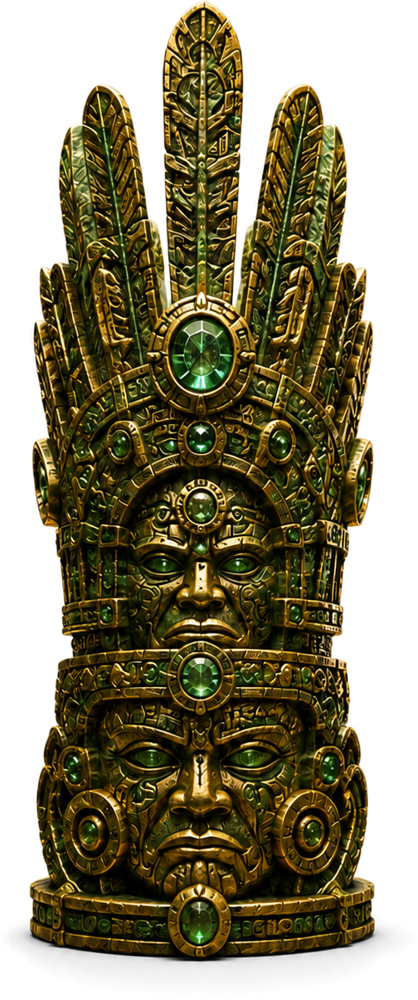

Trial I · The Broken Relic
Lost Temple
◆
The relic was shattered into five pieces and hidden inside the Lost Temple.
Pass the trials, enter the relic chamber and recover all five fragments.
The temple measures every traveler
Choose Your Path
Your choice determines the language of all five trials.
Choose the MeaningQuestion pool: 1 / 20
Relic chamber
Restore the Ancient Relic
The relic has been broken into five pieces. Place every fragment in its correct position.
Relic puzzle: 0 / 5

The five become one
Relic Awakened
The Lost Temple has accepted you. The jungle path is open once more.
Returning to the jungle… Return to the Jungle →